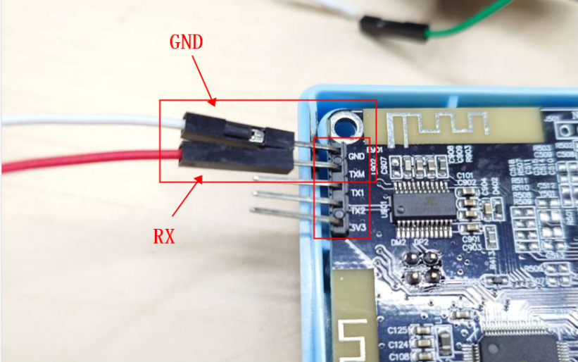

3.10. 测试盒MES LOG输出功能
为满足客户使用蓝牙测试盒时可接入MES系统，在串口输出LOG数据
3.10.1. 测试盒接线
LOG输出接线： 串口输出波特率：460800
edr连接模式下，log输出接线

ble测试使能下，log输出接线

Important
1、edr连接模式即拨码开关不6ble测试不为ON，仅进行edr连接
2、拨码开关6ble测试为ON时，仅进行ble连接，只能输出蓝牙地址；只有拨码开关4频偏测试为ON时才会输出频偏校准值和RSSI
3.10.2. 开启配置
LOG输出需要开启部分配置，如下图所示：
MSE LOG输出配置需要置1
经典蓝牙测试支持tws连接需要置0
需要显示sdk版本，勾选sdk版本
需要显示电量，勾选电量及校验码
需要显示校验码，勾选电量及校验码

串口模式下需要勾选测试模式
需要显示配对信息，勾选对耳配对使能

3.10.3. 协议
LOG输出按特定协议输出，方便接入MES系统
|<------------- LEN --------------->|
+--+--+--+--+--+--+--+--+--+--+--+--+--+--+--+--+
|CRC16| LEN | MASK |L |T |V....|L |T |V....|
+--+--+--+--+--+--+--+--+--+--+--+--+--+--+--+--+
|<---------------- CRC16 ---------------->|
CRC16 ：计算 命令除CRC16本身的数据CRC16值
LEN ：统计 MASK + LTV * N 的长度
MASK ：数据类型标记，一个BIT表示一个数据类型:
Note
BIT位 |
数据类型 |
说明 |
|---|---|---|
BIT0 |
0: 左耳 ; 1: 右耳 |
左右耳标记仅在MASK |
后面的每一个BIT置1时，会在后面添加LTV格式的数据 |
||
BIT1 |
蓝牙地址 |
串口模式下需要勾选 |
BIT2 |
SDK版本 |
edr连接模式下勾选 |
BIT3 |
CRC32 |
edr连接模式下勾选 |
BIT4 |
电量 |
edr连接模式下勾选 |
BIT5 |
配对状态 |
勾选 |
BIT6 |
配对后的蓝牙地址 |
勾选 |
BIT7 |
频偏 |
ble测试模式下进行频偏测试时输出 |
BIT8 |
RSSI |
ble测试模式下进行频偏测试时输出 |
BIT9 |
频偏校准结构 |
输出一个频偏校准的结构体 |
LTV :
Note
L: V的数据长度
T: 数据类型：
编号 |
数据类型 |
说明 |
长度 |
|---|---|---|---|
1 |
蓝牙地址 |
6byte |
|
2 |
SDK版本 |
32byte |
|
3 |
CRC32 |
4byte |
|
4 |
电量 |
16进制 |
1byte |
5 |
配对状态 |
0: 未配对 ; 1: 已配对 |
1byte |
6 |
配对后的蓝牙地址 |
6byte |
|
7 |
频偏 |
4byte |
|
8 |
RSSI |
4byte |
|
9 |
频偏校准结构体 |
4byte |
V: 数据，对应T类型的长度
例1：
2F C0 0C 00 03 00 00 00 06 01 08 C5 EE 4B 0B 87
|CRC16| LEN | MASK |L |T | V |
|2F C0|0C 00|03 00 00 00|06|01|08 C5 EE 4B 0B 87|
例2：
CE 8A 42 00 7E 00 00 00 06 01 E9 FE 53 86 9A 52
20 02 18 03 3F 3F 3F 3F 2D 40 32 30 32 33 30 36
32 36 2D 24 38 35 65 63 31 00 00 00 00 00 00 00
00 00 04 03 13 E7 54 75 01 04 64 01 05 01 06 06
A0 E3 B1 6D 9A EB
|CRC16| LEN | MASK |L |T | V |
|CE 8A|42 00|7E 00 00 00|06|01|E9 FE 53 86 9A 52|
|L |T | V
|20|02|18 03 3F 3F 3F 3F 2D 40 32 30 32 33 30 36
V
32 36 2D 24 38 35 65 63 31 00 00 00 00 00 00 00
|L |T | V |L |T |V |L |T |V |L |T |
00 00|04|03|13 E7 54 75|01|04|64|01|05|01|06|06|
V |
A0 E3 B1 6D 9A EB|
例3：输出频偏和RSSI
19 50 18 00 83 01 00 00 06 01 8C 4C 80 7A A0 C2
04 07 1B 00 00 00 04 08 CD FF FF FF
|CRC16| LEN | MASK |L |T | V |
|19 50|18 00|83 01 00 00|06|01|8C 4C 80 7A A0 C2|
|L |T | V |L |T | V |
|04|07|1B 00 00 00|04|08|CD FF FF FF|